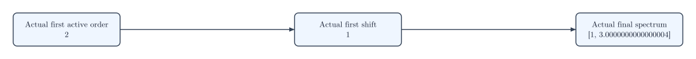
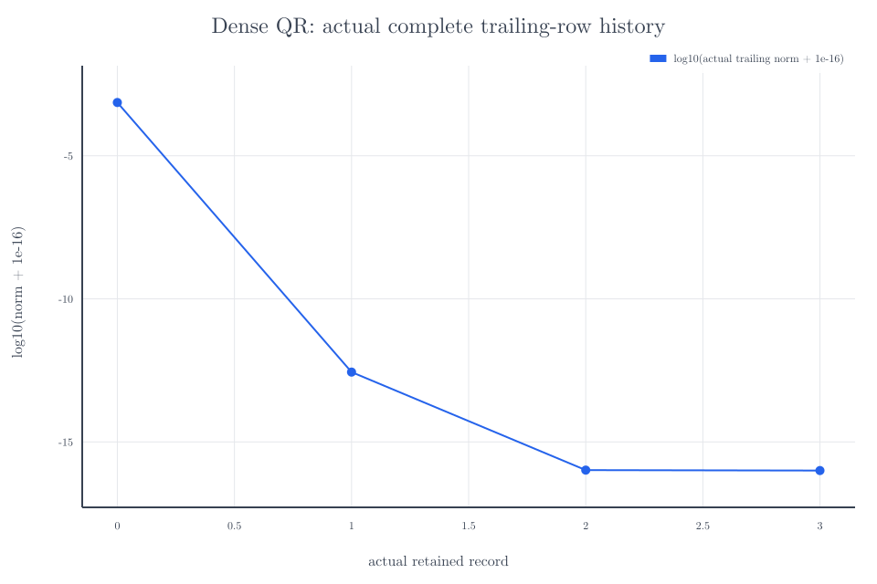
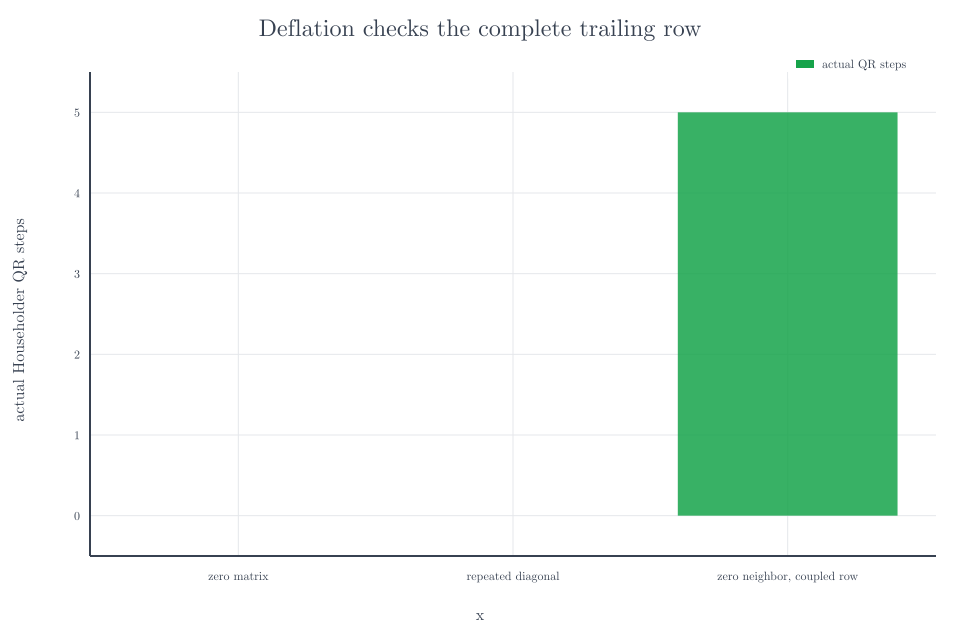
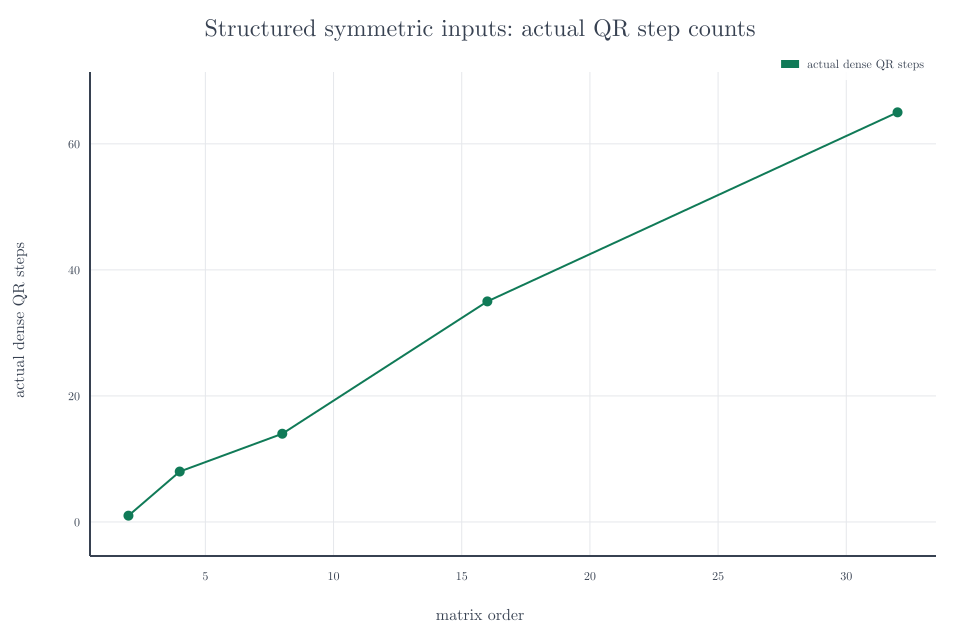

Symmetric QR: actual Householder steps and complete-row deflation
Abstract
A symmetric matrix encodes eigenvalues through coupled entries; reading its diagonal before convergence can give the wrong spectrum. Shifted QR repeatedly applies orthogonal similarities until a complete trailing row decouples. This report reads actual native Householder iterations, retains the original four-eigenvalue fixture and dense three-by-three convergence experiment, and separates convergence from an iteration cap.
Mechanism and mathematical scope
For the active block, factor \(A-\mu I=QR\), with \(Q^TQ=I\), then form
Similarity preserves the characteristic polynomial. Householder reflectors remain orthogonal even when a shifted column vanishes; a zero column is skipped rather than replaced by a zero orthogonal basis vector. The trailing two-by-two block supplies a Wilkinson shift, computed with hypot and a cancellation-avoiding formula.
A dense matrix can have \(A_{m-1,m-2}=0\) while other entries in its last row are large. Consequently the native solver tests the complete trailing off-diagonal norm against a diagonal scale, then zeros both symmetric couplings only on acceptance. An exhausted per-block budget throws. This implementation performs dense cubic-cost steps without a tridiagonal reduction, so the familiar cubic local convergence claim for a specialized tridiagonal QR solver is not asserted here.
A tiny actual producing history
The table and native concept diagram read the same producing execution. Every block below is a complete editable C++ program.
#include <dm/dm.hpp>
int main() {
namespace a = dm::algorithms;
namespace g = dm::graphics;
std::filesystem::create_directories("build");
auto t = a::qr_eigenvalues_trace({{2, 1}, {1, 2}});
std::print("\n| active order | actual step | actual shift | trailing norm | deflated |\n| ---: | ---: | " "---: | ---: | --- |\n");
for (const auto &s : t.steps)
std::print("| {} | {} | {} | {} | {} |\n", s.active, s.iteration,
s.shift, s.trailing_norm, s.deflated);
g::Diagram d;
d.node("n0", {0, 0},
std::format("Actual first active order\n{}", t.steps[0].active));
d.node("n1", {10, 0},
std::format("Actual first shift\n{}", t.steps[0].shift));
d.node("n2", {20, 0},
std::format("Actual final spectrum\n{}", t.eigenvalues));
d.edge("n0", "n1").edge("n1", "n2");
d.save_svg("build/qr_algorithm_tiny.svg");
}| active order | actual step | actual shift | trailing norm | deflated |
|---|---|---|---|---|
| 2 | 1 | 1 | 0 | true |
| 1 | 0 | 0 | 0 | true |

The retained original experiment
#include <dm/dm.hpp>
int main() {
namespace a = dm::algorithms;
namespace g = dm::graphics;
std::filesystem::create_directories("build");
const a::QrMatrix A{{2, -2.5, -3.5, 0}, {-2.5, 2, 0, -3.5},
{-3.5, 0, 2, -2.5}, {0, -3.5, -2.5, 2}};
auto spectrum = a::qr_eigenvalues(A);
auto t = a::qr_eigenvalues_trace({{4, 1, .5}, {1, 3, .8}, {.5, .8, 2}});
std::print("Retained four-by-four spectrum: {}. Target multiset: [-4,1,3,8].\n",
spectrum);
std::vector<double> x, y;
std::print("\n| actual record | active order | block steps | complete trailing norm |\n| ---: | ---: | " "---: | ---: |\n");
for (std::size_t i = 0; i < t.steps.size(); ++i) {
x.push_back(i);
y.push_back(std::log10(t.steps[i].trailing_norm + 1e-16));
std::print("| {} | {} | {} | {} |\n", i, t.steps[i].active,
t.steps[i].iteration, t.steps[i].trailing_norm);
}
auto p = g::RPlot::create();
p.lines(x, y, "log10(actual trailing norm + 1e-16)", {37, 99, 235}).points(
x, y, {37, 99, 235}, 5).title("Dense QR: actual complete trailing-row history").x_label("actual retained record").y_label("log10(norm + 1e-16)");
p.save_svg("build/qr_algorithm_original.svg");
}Retained four-by-four spectrum: [-3.9999999999999987, 0.9999999999999997, 3, 8]. Target multiset: [-4,1,3,8].
| actual record | active order | block steps | complete trailing norm |
|---|---|---|---|
| 0 | 3 | 1 | 0.0007274057764273619 |
| 1 | 3 | 2 | 2.756069268763046e-13 |
| 2 | 2 | 1 | 3.545965375138883e-18 |
| 3 | 1 | 0 | 0 |

Explicit controls
#include <dm/dm.hpp>
int main() {
namespace a = dm::algorithms;
namespace g = dm::graphics;
std::filesystem::create_directories("build");
std::vector<a::QrMatrix> cases{{{0, 0}, {0, 0}}, {{2, 0}, {0, 2}},
{{2, 1, 1}, {1, 3, 0}, {1, 0, 4}}};
std::vector<std::string> labels{"zero matrix", "repeated diagonal",
"zero neighbor, coupled row"};
std::vector<double> counts;
std::print("\n| control | actual spectrum | actual QR steps |\n| --- | --- | ---: |\n");
for (std::size_t i = 0; i < cases.size(); ++i) {
auto r = a::qr_eigenvalues_run(cases[i]);
counts.push_back(r.iterations);
std::print("| {} | `{}` | {} |\n", labels[i], r.eigenvalues,
r.iterations);
}
bool budget = false, bad = false;
try {
a::qr_eigenvalues({{2, 1}, {1, 2}}, 0);
} catch (const std::runtime_error &) {
budget = true;
}
try {
a::qr_eigenvalues({{1, 2}, {0, 1}});
} catch (const std::invalid_argument &) {
bad = true;
}
std::print("Zero budget on coupled block rejected: {}; nonsymmetry rejected: {}.\n",
budget, bad);
auto p = g::RPlot::barplot(counts, labels, "actual QR steps");
p.title("Deflation checks the complete trailing row").y_label(
"actual Householder QR steps");
p.save_svg("build/qr_algorithm_controls.svg");
}| control | actual spectrum | actual QR steps |
|---|---|---|
| zero matrix | [0, 0] | 0 |
| repeated diagonal | [2, 2] | 0 |
| zero neighbor, coupled row | [1.1206147584281836, 3.3472963553338606, 4.532088886237956] | 5 |
Zero budget on coupled block rejected: true; nonsymmetry rejected: true.

Actual selected work and sensitivity
#include <dm/dm.hpp>
int main() {
namespace a = dm::algorithms;
namespace g = dm::graphics;
std::filesystem::create_directories("build");
std::vector<double> x, y;
std::print("\n| Toeplitz order | actual QR steps | actual deflations | min eigenvalue | max eigenvalue " "|\n| ---: | ---: | ---: | ---: | ---: |\n");
for (std::size_t n : {2, 4, 8, 16, 32}) {
auto r = a::qr_eigenvalues_run(a::qr_tridiagonal(n));
x.push_back(n);
y.push_back(r.iterations);
std::print("| {} | {} | {} | {} | {} |\n", n, r.iterations,
r.deflations, r.eigenvalues.front(), r.eigenvalues.back());
}
auto p = g::RPlot::create();
p.lines(x, y, "actual dense QR steps", {16, 122, 87}).points(x, y,
{16, 122, 87},
5).title(
"Structured symmetric inputs: actual QR step counts").x_label(
"matrix order").y_label("actual dense QR steps");
p.save_svg("build/qr_algorithm_work.svg");
}| Toeplitz order | actual QR steps | actual deflations | min eigenvalue | max eigenvalue |
|---|---|---|---|---|
| 2 | 1 | 2 | 1 | 3.0000000000000004 |
| 4 | 8 | 4 | 0.38196601125010543 | 3.618033988749895 |
| 8 | 14 | 8 | 0.12061475842818294 | 3.8793852415718177 |
| 16 | 35 | 16 | 0.03405380063219671 | 3.9659461993678042 |
| 32 | 65 | 32 | 0.009056154853830873 | 3.9909438451461683 |

API and interpretation
The four-by-four input is the exact Hadamard-basis construction from the original report, written as explicit entries. The dense three-by-three figure follows actual complete-row decisions; after a deflation the active row changes, so this is not a globally monotone off-diagonal mass curve. An iteration cap is an error budget, not an approximate-spectrum API. For the tridiagonal control, sine eigenvectors give eigenvalues 2-2cos(j*pi/(n+1)); independent checks compare this closed form to native results. Finite arithmetic can still overflow and is checked. Default order256,1000 steps per block and history1,000,000 entries are configurable.
Reusable producers, fixtures and histories live in the canonical C++ library. Captured records own their values and do not come from a separate report replay. Selected counters and record/scalar policies are specified at their API boundaries; they are not peak-byte or wall-time budgets. Synthetic structural inputs are controlled fixtures for these mechanisms.
References
Verified in the shared ten-document batch: 108 scoped native cases (22 new plus86 existing; one unchanged Rayleigh failure baseline-confirmed and carried to batch314–323);22 directly instrumented ASan/UBSan cases;91 executable public examples;367/367 full-file definitions plus17/17 common-sampler/engine definitions;10 hovers;32478 independent records/106910 checks;frozen compatibility across all ten families;12 checkout/installed standalone headers and linked consumer;40 executed programs and40 inspected figures with both exports. Legacy retirement follows the completed validation gates.